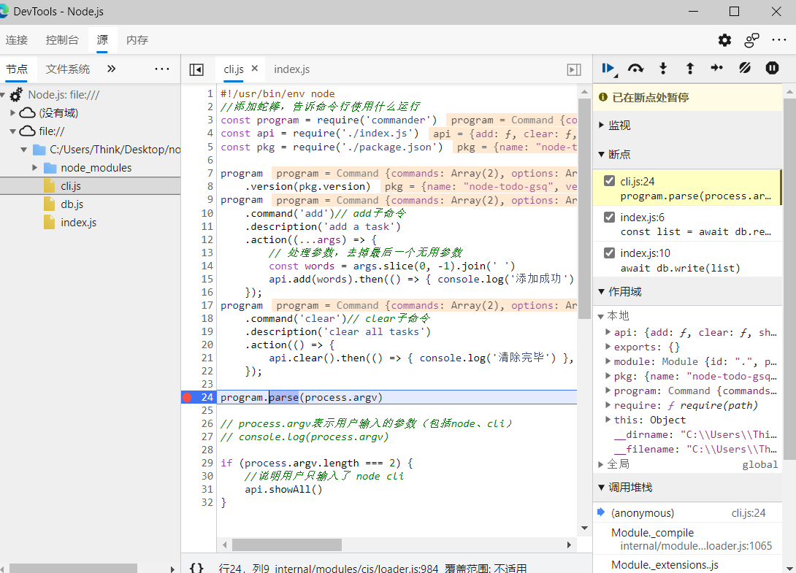

调试Nodejs
1 VSCode调试Node.js
在launch.json中添加配置
{
// 使用 IntelliSense 了解相关属性。
// 悬停以查看现有属性的描述。
// 欲了解更多信息，请访问: https://go.microsoft.com/fwlink/?linkid=830387
"version": "0.2.0",
"configurations": [
{
"type": "pwa-node",
"request": "launch",// 会用node来启动
"name": "cli add task",
"skipFiles": [
"<node_internals>/**"
],
"program": "${workspaceFolder}\\cli.js",// 入口文件
"args": ["add","task","200"]// 参数
}
]
}
点击启动即可在调试控制台查看运行情况

2 命令行结合Chrome调试Node.js
命令行中输入
node --inspect-brk cli add task2
打开浏览器，F12检查页面，几秒钟后上方会出现node图标，点进去即可对node程序进行调试了。

最后修改于 2021-06-30